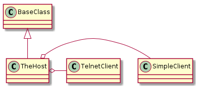
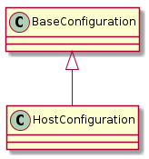

A bundle of client and some leftover methods and information. The Host builds the connection based on the identified connection type.
A central place for constants needed by the Host.
There used to be multiple hosts, but now there is one. It uses the connection type to build the other hosts and return them.

TheHost(hostname, test_interface[, ...]) |
The main host used to build the other hosts |
TheHost.client |
A built client (connection) |
TheHost.exec_command(command[, timeout]) |
Calls the Clients’s non-blocking run to execute prefix command. |
TheHost.close() |
Closes the client and sets it to None |
TheHost.kill_all(process) |
Kills all the process instances on the remote client. |
A place to store constants that other classes might need to refer to.
class HostEnum(object):
"""
A holder of Host constants
"""
__slots__ = ()
# options
control_ip = 'control_ip'
password = 'password'
connection_type = 'connection_type'
test_ip = 'test_ip'
username = 'username'
port = 'port'
timeout = 'timeout'
prefix = 'prefix'
operating_system = 'operating_system'
options = (control_ip, password, connection_type, test_ip,
username,
port, timeout, prefix, operating_system)
# defaults
default_port = 22
default_type = 'ssh'
default_timeout = 1
default_operating_system = 'linux'
# end HostEnum
This is a configuration holder for host-configurations. It is created as an Abstract Base Class so that separate dut and server configurations can be used. They need to inherit from it and set the section name.

HostConfiguration(section, *args, **kwargs) |
A holder of device-configurations |
HostConfiguration.example |
an example device configuration |
HostConfiguration.section |
The section name in the configuration file |
HostConfiguration.control_ip |
The optional hostname for the device (default=None) |
HostConfiguration.password |
The optional password for the device (default=None) |
HostConfiguration.connection_type |
One of ‘ssh’ or’telnet’ |
HostConfiguration.test_ip |
Gets the hostname for the test interface (not optional) |
HostConfiguration.prefix |
Gets a prefix string to add to each command sent to the DUT |
HostConfiguration.timeout |
Gets the timeout for connections (e.g. |
HostConfiguration.username |
Gets the login username for the device |
HostConfiguration.operating_system |
Gets the operating system if the user set it |
HostConfiguration.kwargs |
dictionary of options not in this class |
HostConfiguration.reset() |
Sets the properties to None |
HostConfiguration.check_rep() |
Checks if the parameters seem reasonable |
| Attribute | Description | Default |
|---|---|---|
| control_ip | Hostname for the control interface | None |
| password | Login password | None |
| connection_type | Type of connection to the device | ssh |
| test_ip | Hostname for the test-interface | |
| username | Login username | |
| port | port for the connection | 22 |
| timeout | timeout for the connection | 1 |
| prefix | string to prepend to the commands sent to the device | None |
| operating_system | name of OS so commands can be altered as needed | linux |